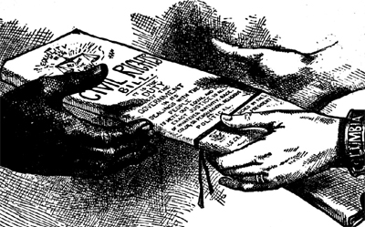

|
The Civil Rights Act of 1875 was the last major piece of civil rights
legislation passed during the Reconstruction era, following the Fourteenth and
Fifteenth amendments as well as three other civil rights acts. The 1875 Act was
much broader than its predecessors, in that it aimed to bring an end to all
forms of racial discrimination.
The bill that became the Civil Rights Act of 1875 was first submitted to
Congress in 1870, by Radical Republican Senator Charles Sumner of Massachusetts.
|

This cartoon suggests that the Civil Rights
Act of 1875 was a gift from whites to African Americans. This is
a marked change from the years immediately following the Civil
War, when cartoons argued that African Americans had earned
their civil rights.
|
Originally, the bill prohibited discrimination in schools, theaters, cemeteries,
public transportation, hotels, and churches. The provisions for schools and
cemeteries particularly angered Democrats, and even caused unease among the more
conservative Republicans, and so Sumner's proposal was tabled. The bill
languished for several years before Speaker of the House James G. Blaine of
Maine and Representative James Garfield proposed a compromise version that
eliminated schools and cemeteries. President Ulysses S. Grant threw his weight
behind the Blaine-Garfield proposal, and it was quickly adopted.
Even with the provisions about schools and cemeteries removed, the Civil
Rights Act of 1875 had the potential to be a truly groundbreaking piece of
legislation. The previous civil rights acts had dealt with specific issues -
citizenship, property holding, and voting. The 1875 Act, on the other hand,
could be read as empowering the federal government to completely remake southern
life. Because the act did not define what constituted discrimination, any issue
could be addressed under its terms - politics, economics, law, and so forth.
Unfortunately for African-Americans, the impulse for reform was dying out,
even among members of the Republican Party. Hundreds of lawsuits were filed
under the terms of the Civil Rights Act of 1875, and most were promptly
dismissed. The demise of the Act became official in 1883 when the Supreme Court,
made up entirely of Republican appointees, ruled 8-1 that the Act was
unconstitutional. The basic spirit of the Act would not be revived until nearly
a century later, with the passage of the Civil Rights Act of 1964.
Source: Joan Waugh, ed., Facts on File Encyclopedia of American
History: Civil War and Reconstruction, 1856 to 1869 (New York: Facts on
File, 2003), 62-63.
|